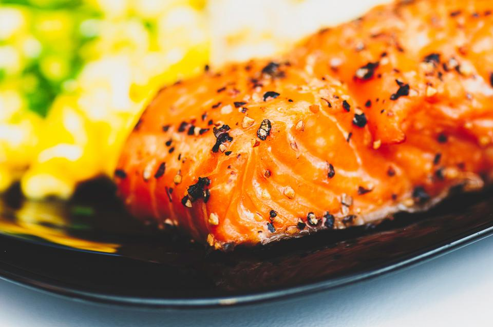

Baked Salmon

Description
This is a good one for those who are looking for a proper meal but still don't really have much time to cook something huge. Its prep is nice and simple and the cook time is only around 15-20 minutes.
Ingredients
- Fresh or thawed salmon
- Lemon juice
- Black pepper or your own favorite seasoning
- Canola oil
Steps
- Place parchment paper or alluminum foil on a pan.
- Preheat oven to 400 degrees.
- Place salmon, skin side down, on parchment paper or foil.
- Rub a moderate amount of canola oil on salmon.
- Sprinkle lemon juice and pepper and any other desired seasonings on top.
- Bake for 15-20 minutes or until internal temperature registers at 135 degrees at the thickest part of the salmon.
Home